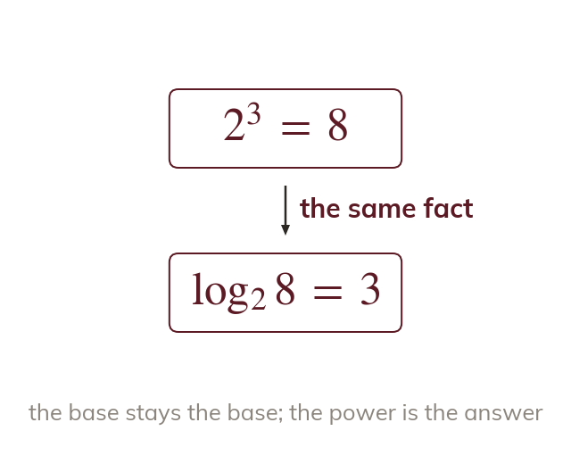
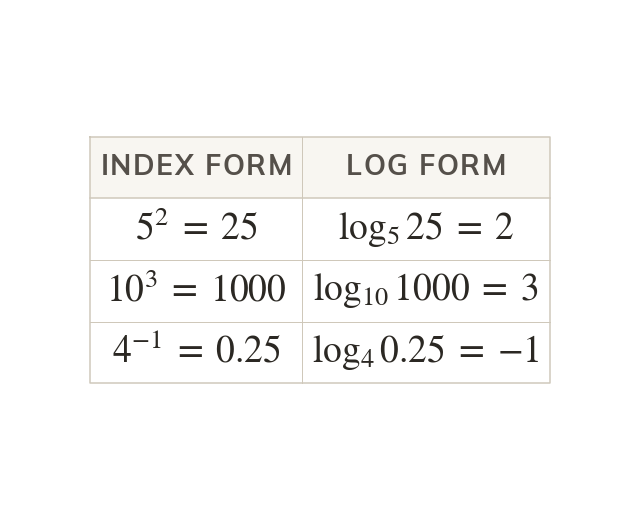
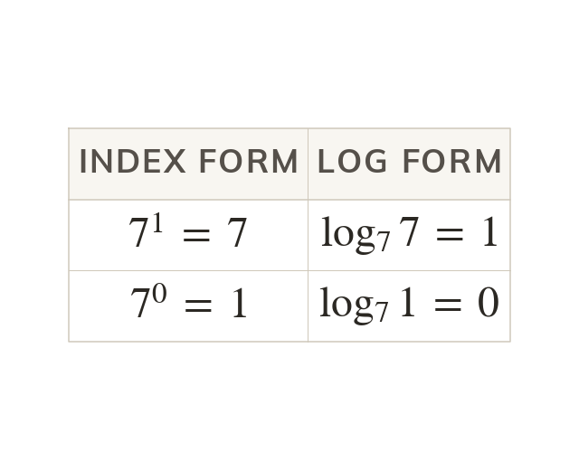
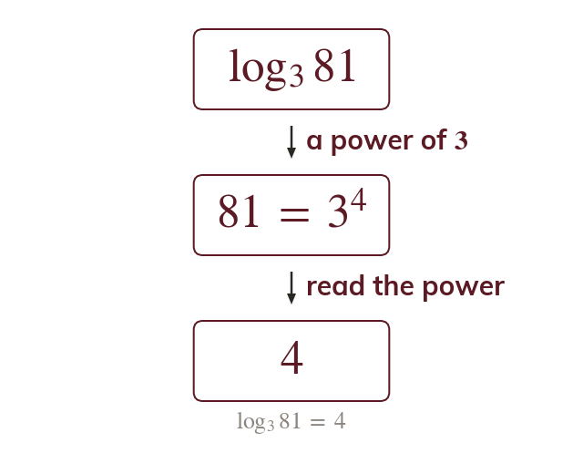
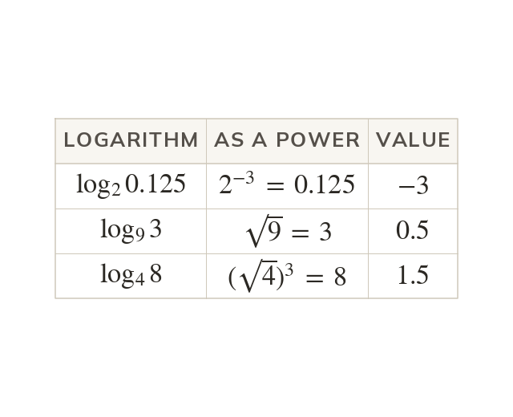
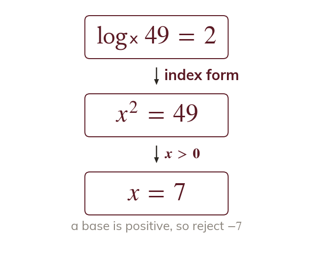

A logarithm is a power
The logarithm log₂ asks "2 to what power gives 8?" The answer is so log₂
A logarithm answers the question "what power?", so log₂ because
Logarithms undo exponentials, so they solve equations such as in and find the time in a model in
Work down the page at your own pace. Write every answer in your book first, then click to check it.
Read each card, then follow the worked examples one step at a time.

The logarithm log₂ asks "2 to what power gives 8?" The answer is so log₂

Writing logₐ means exactly The base of the power becomes the small number after log.

so logₐ and so logₐ
A calculator writes log₁₀ as log.
Pick an answer. If it's wrong, the feedback tells you which mistake it was.
Write the blanks in your book first, then tap each one to check.
Read each card, then follow the worked examples one step at a time.

To find log₃ write as a power of
so log₃ and in general logₐ

A fraction is a negative power and a root is a fractional power. log₂ because and log₉ because

Rewrite the logarithm as an index statement, then solve. log₃ gives
A base must be positive, so gives only.
Pick an answer. If it's wrong, the feedback tells you which mistake it was.
Write the blanks in your book first, then tap each one to check.
Finished? Next lesson: 12.P14.5 Laws of Logarithms.
For each skill, tap the one that is true for you today. Your Revise pages start with anything you mark Not yet.
Your ratings are saved on this device only.
Log in, then search for a code to practise that skill.